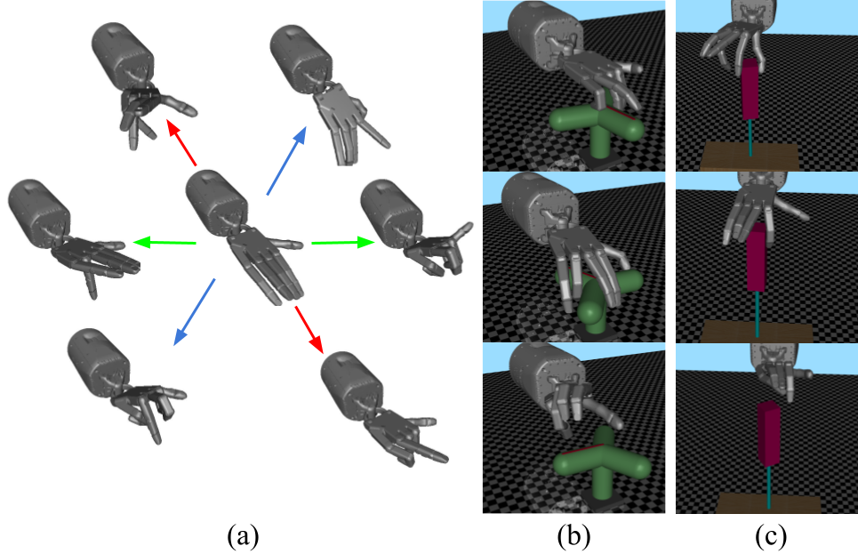

Discovering Synergies for Robot Manipulation with Multi-Task Reinforcement Learning
Controlling robotic manipulators with high-dimensional action spaces for dexterous tasks is a challenging problem. Inspired by human manipulation, researchers have studied generating and using postural synergies for robot hands to accomplish manipulation tasks, leveraging the lower dimensional nature of synergistic action spaces. However, many of these works require pre-collected data from an existing controller in order to derive such a subspace by means of dimensionality reduction. In this paper, we present a framework that simultaneously discovers a synergy space and a multi-task policy that operates on this low-dimensional action space to accomplish diverse manipulation tasks. We demonstrate that our end-to-end method is able to perform multiple tasks using few synergies, and outperforms sequential methods that apply dimensionality reduction to independently collected data. We also show that deriving synergies using multiple tasks can lead to a subspace that enables robots to efficiently learn new manipulation tasks and interactions with new objects.
Paper
Latest version: arxiv

Technical Summary Video
Proof for Eq. 1
Eq. 1. introduces a lower bound for $\mathbb{H}(\pi_{task}(a_t | s_t, n))$, which encourages our agent to learn a control subspace that is compact but still contains diverse hand postures that are useful various manipulation tasks. Due to the page limit for ICRA, we present the an informal proof for Eq. 1 here. We first present a lower bound for $\mathbb{H}(p(x))$, which is useful to get a lowerbound in Eq. 1:
$$ \begin{eqnarray} \mathbb{H}(p(x)) &=& \int p(x) \log(\dfrac{1}{p(x)}) dx \nonumber \\ &=& \int p(x) \log(\int q(z|x)\dfrac{1}{p(x)}dz) dx \nonumber \\ &=& \int p(x) \log(\int q(z|x)\dfrac{p(z|x)}{p(x, z)}dz) dx \nonumber \\ &\geq& \int p(x) \int q(z|x)\log(\dfrac{p(z|x)}{p(x, z)}dz) dx \nonumber \\ &=& \int\int p(x, z) log(\dfrac{q(z|x)}{p(x, z)}dz) dx. \tag{4} \end{eqnarray} $$ Plugging Eq. 4 into $\mathbb{H}(\pi_{task}(a_t | s_t, n))$: $$ \begin{eqnarray} \mathbb{H}[\pi_\theta(a_t|s_t, n)] &=& E_{\pi}[-\log \pi_\theta(a_t|s_t, n)] \nonumber \\ &\geq& E_{\pi_\theta(a, z | s, n)} \Big[ \log(\dfrac{q(z| a, s, n)}{\pi(a, z| s, n)}) \Big] \nonumber \end{eqnarray} $$
Task Sets Details

Here, we describe the details of each environment:
- Task set #1: the valve turning tasks only variate on the shape of the valve. The observations of these tasks are $(qpos_{hand}, qpos_{valve}, qvel_{valve})$, where $qpos_{hand}$ and $qpos_{valve}$ are the joint position of the hand and the valve, $qvel_{valve}$ is the joint velocity of the valve. The reward function of all tasks in task set \#1 are $r_{valve} = a * qvel_{valve} + b$, where $a$ and $b$ are constant and the same across all tasks in task set \#1.
- Dice reorienting: in this task, the shadow hand is asked to reorient the dice to some target poses. The observation of this tasks contains: the joint position of the hand $qpos_{hand}$, the pose of the dice $qpos_{dice}$, the velocity of the dice $qvel_{dice}$ and the target pose $qpos_{target}$. The reward function we use here is a function of the distance between the current pose and the target pose: $r_{dice} = f(qpos_{dice}, qpos_{target})$, where $f$ represent a distance function.
- Weight pulling: in this task, we ask the shadow hand to manipulate a soft rope to pull a cube that is attached to the end of the rope. The observations of this task contain the joint position of the hand $qpos_{hand}$ and the pose of the cube $qpos_{cube}$. The reward function of this task is a linear function of the height of the cube: $r_{weightpull} = m * h_{cube} + n$, where $m$, $n$ are constants and $h_{cube}$ is the height of the cube.
- Screwing: in this task, we ask the shadow hand to rotate a screw driver to make it screw into a wood block. The screw driver has two joints: a hinge joint and a slide joint on the x-axis. The position of the slide joint is linearly dependent on the position of the hinge joint. The observations of this tasks are the the joint position of the hand $qpos_{hand}$, the joint position and velocity of the screw driver $qpos_{screw}$, $qvel_{screw}$.
Team


BibTeX
@article{he2022discosyn,
title={Discovering Synergies for Robot Manipulation with Multi-Task Reinforcement Learning},
author={Zhanpeng, He and Matei, Ciocarlie},
journal={IEEE Robotics and Automation},
year={2022},
publisher={IEEE}
}Contact
If you have any questions, please feel free to contact Zhanpeng He